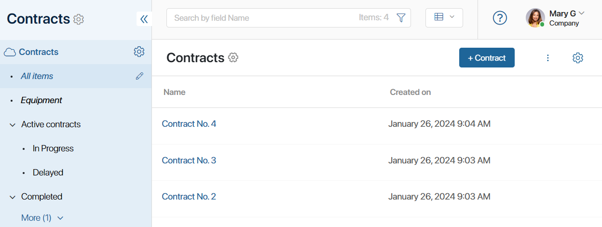
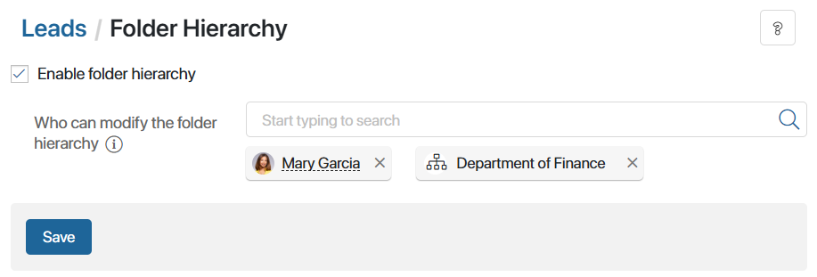
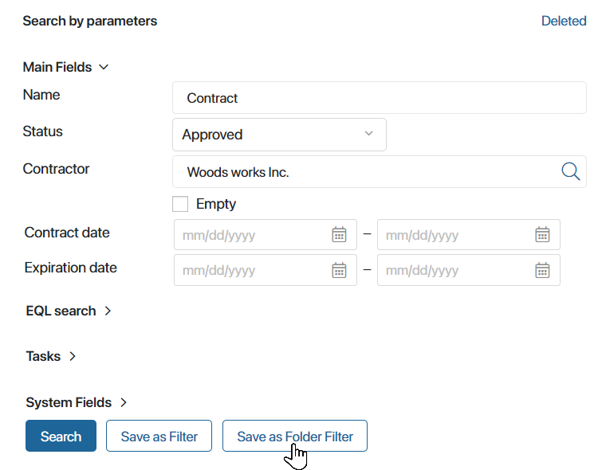

Users can arrange app items by certain parameters and group them into folders. For this purpose, a folder hierarchy is enabled in the app and a folder tree is configured.

Set up a folder tree
начало внимание
Only the system administrator can enable the hierarchical folder and create its filters.
конец внимание
To configure the folder structure:
- Click the gear icon next to the app name to open the app menu and select Folder Hierarchy.
- Tick the Enable folder hierarchy option.

- Grant employees the rights to modify the folder tree: move, change the name, delete folders and their filters, and set access rights to certain folders. To do this, in the Who can modify the folder hierarchy field, select a user, group, or org chart item.
Make sure that in the access settings set for folders the selected users have the permission to view app data.
- Click Save. The All items filter will appear under the app name.
- Add folders by clicking the pencil icon next to the All items filter.
- Create a nested folder structure. Click on the gear icon next to the desired folder and select Add Child Folder in the menu that opens.
- Once you’ve created and configured the folder tree, click on the cross to the right of the All items filter to finish editing.
To allow users to sort items into folders, make sure that the Folder Navigation widget is placed on the create, view, or edit forms.
Change folder hierarchy
You can perform the following actions in the folder hierarchy:
- Rename. Specify a new name for the folder in the same manner as when creating a new folder.
- Move. Select a folder in your folder tree to move the current folder to it.
- Permissions. Configure access rights for a particular folder. You can also manage the inheritance of general access permissions configured for all folders within an app:
- When the Inherit permissions from the parent folder option is enabled, access to the folder remains available to employees with general permissions. You can specify other users who will see the folder in the left menu.
- If the option is disabled, users are given individual permissions for a specific folder. Only these employees will be able to work with its items.
- Delete. Delete the folder. All nested sub-folders will also be deleted. App items will still be available through the All items filter.
To open the folder actions menu, click the pencil icon next to the All items filter. Then click the gear icon next to the name of the folder you need. A menu with available folder actions will open.
The folders can be edited by the system administrator and users with permission to modify the folder hierarchy.
Create folder filters
The administrator can set up a quick search for items grouped by certain parameters among the folders of the hierarchy. You can apply folder filters for this purpose.
Such a filter is displayed in the folder tree: its name is italicized.
To create a new folder filter, open the search by parameters page, fill in the necessary fields, and click Save as Folder Filter.

After adding a filter, the administrator and users with permission to modify the folder hierarchy can rename, move, or delete the filter. To do that, click the pencil icon next to the All items filter. Then click the gear icon next to the name of the folder you need and select an appropriate menu item.
Export and import the folder tree
When exporting an app with a configured folder hierarchy, all folders created will also be exported. If you import this app into another workspace or company, the entire folder structure will be retained.